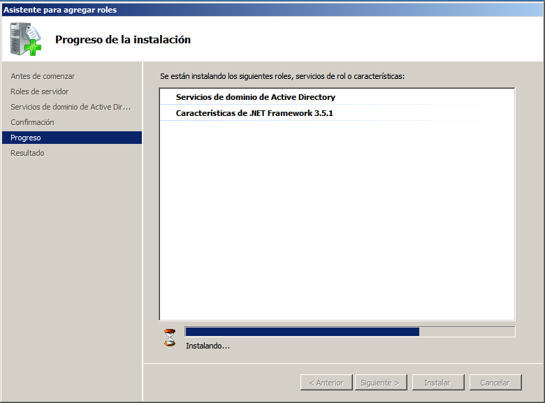
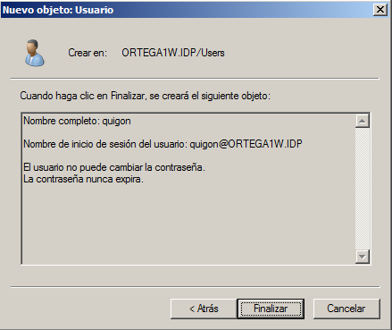
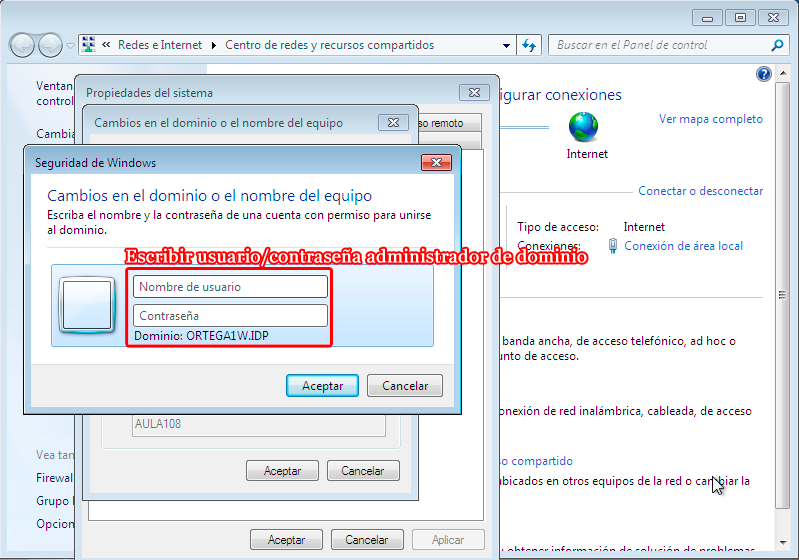
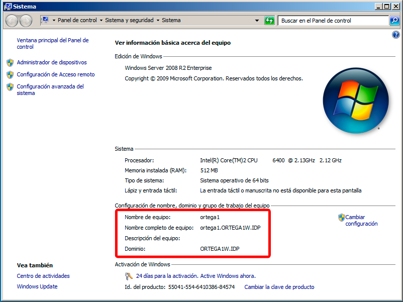
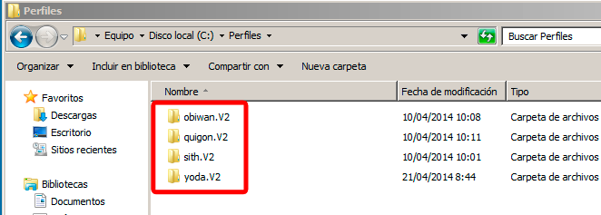

- Módulo: Sistemas Operativos
- Título del trabajo: A1: PDC WinServer
- Componentes del grupo: Alejandro Ortega Freire
- Curso Académico: 2013/2014
- Fecha de entrega: 24 de abril de 2014
1.- Introducción - PDC WinServer
- En esta práctica vamos a montar un PDC (Controlador Primario de Dominio) con Servidor Windows 2008.
- Leer/consultar la documentación de la unidad y los enlaces de interés( Usuarios y Grupos)
- Realizaremos las prácticas en MV's que pueden estar o no en el mismo PC.
- En VirtualBox, configuraremos inicialmente, las máquinas en modo de red "puente".
 Principio del punto 1 |
Principio del punto 1 |  Fin del punto 2 |
Fin del punto 2 |  Índice
Índice
2.- Configuración inicial
2.1- Máquinas Virtuales
- En esta práctica necesitaremos tres máquinas virtuales;
- MV1 con SO Windows 2008 Server Enterprise que tendrá dirección IP 172.16.108.111 y nombre ORTEGA1.
- MV2 con SO Windows 7 que tendrá dirección IP 172.16.108.211 y nombre ORTEGA2A.
- MV3 con SO Windows 7 que tendrá dirección IP 172.16.108.11 y nombre ORTEGA2B.
NOTA 1:
- Las diferencias entre las distintas versiones de SO Windows: Standard, Professional, Enterprise, etc. son las funcionalidades/características que vienen activas o deshabilitadas.
- Si trabajamos con Windows 2003 Server el disco duro en VirtualBox debe estar configurado con el controlador IDE, para evitar problemas con los drivers SATA.
2.2- Contraseñas en WinServer
- Necesitamos una MV con Windows 2008 Server Enterprise (MV1 - ORTEGA1).
- Recién instalado, WinServer es estricto con la política de seguridad, en cuanto a cómo deben definirse las claves (mayúsculas, minúsculas, números y caracteres especiales y longitud superior a 10). Se podría deshabilitar, pero reduciríamos la seguridad de las contraseñas. Un ejemplo de contraseñas segura: "obiwanKENOBI2014", que tiene 16 caracteres entre los que se incluyen mayúsculas, minúsculas y números.
- Para deshabilitar esta opción hay que dirigirse a las Directivas de seguridad local -> Directivas de cuenta, y deshabilitar los requisitos de complejidad de las contraseñas, como se muestra en las imágenes:
Imágenes 1 y 2: Deshabilitar los requisitos de complejidad de las contraseñas (Windows 2008 Server).
2.3- Configuración del Windows 2008 Server
- Veamos imagen de configuración inicial de nuestra máquina:
Imagen 3: Tareas de configuración inicial en Windows 2008 Server.
- Configuramos el nombre del equipo (host) poniendo ortega1.
Imagen 4: Configuración del nombre del equipo en Windows 2008 Server.
- Configuramos el host con DNS1 el propio Windows-Server (127.0.0.1), y DNS2 el del centro (172.16.1.1).
Imagen 5: Configuración del DNS en ORTEGA1 (Windows 2008 Server).
NOTA 2:
- Windows Server tiene una herramienta en Inicio -> Administrar el Servidor, que nos permite consultar la configuración del servidor, instalar/desinstalar paquetes/funciones/servicios, y acceder a los paneles de administración de los distintos servicios.
Imágenes 6 y 7: Administrador del servidor en Windows 2008 Server.
Principio del punto 2 | Fin del punto 3 | Índice
3.- Controlador de dominio
3.1- Definiciones
- El DA (Directorio Activo) es una base de datos LDAP, que guarda la información de los objetos de nuestro dominio.
- Nombre de Dominio: cada PDC se identifica con su nombre de dominio, el cuál debe ser único. Como nombre de dominio pondremos un nombre corto (6 letras del primer-apellido-del-alumno + 1W.IDP).
En este caso el nombre de dominio, al ser ORTEGA el apellido del alumno, será ORTEGA1W.IDP.
NOTA 3:
- En realidad podríamos poner cualquier nombre, pero lo haremos de esta forma para organizar mejor las distintas máquinas de la clase. Hay que evitar que el nombre de dominio se repita con la configuración de otro compañero..
- Además los nombres de dominio NO debe ser muy largos. Preferiblemente menos de 10 letras, para evitar problemas con los clientes Windows anteriores a Vista/7/8.
3.2- Instalación
- Para activar la función de controlador de dominios podemos:
- Abrimos una consola (cmd) y ejecutar el comando dcpromo.
- Ir a Inicio -> Administrar el servidor -> Agregar funciones. (Servicio de Dominio de Directorrio Activo y el Servicio DNS).
- Con cualquiera de las dos opciones se inicia el asistente de configuración de lo servicios del dominio de AD. A medida que se va instalando la función de controlador de dominios se solicitan una serie de parámetros que deben ser resueltos de la siguiente manera:
- Modo experto => SÍ
- Crear un dominio nuevo de un bosque nuevo => SÍ
- FQDN del dominio => ORTEGA1W.IDP
- Nivel funcional del bosque => Windows Server 2008
- Servidor DNS => SÍ
- Carpetas de almacenamiento => Dejar valores por defecto.
- A continuación se muestran la secuencia de imágenes que ilustran tales pasos:

Imágenes 8 a 28: Activar la función de controlador de dominios y servidor DNS en Windows 2008 Server.
- Al terminar reiniciar el sistema.
- Vemos imagen, donde podemos comprobar que se han instalado varias "funciones" para controlar el dominio:
Imagen 29: Nuevas funciones instaladas en Windows 2008 Server.
Principio del punto 3 | Fin del punto 4 | Índice
4.- Usuarios del dominio
NOTA 4: leer/consultar los apuntes para entender los conceptos: usuario local, usuario del dominio, equipo del dominio, grupo local, grupo del dominio.
- Ir a Inicio -> Herramientas Administrativas -> Usuarios y Equipos de Active Directory.
- Crear el grupo JEDI con los siguientes usuarios de dominio: "yoda,", "obiwan" y "quigon". No confundir usuarios locales con usuarios del dominio.
- Crear el grupo SITH con los siguientes usuarios de dominio: "emperador", "vader" y "maul".
- Creación de los grupos JEDI y SITH:
Imagen 30: Crear grupos.
Imagen 31: Crear grupo JEDI.
Imagen 32: Crear grupo SITH.
- Ejemplo de usuario "quigon". La creación del resto de usuarios será análoga al procedimiento que se muestra a continuación:
Imagen 33: Crear usuarios.

Imágenes 34 a 36: Crear usuario quigon.
- Ejemplo de agregar el usuario "quigon" al grupo JEDI. Añadir el resto de usuarios a sus respectivos grupos se hará de forma análoga al procedimiento que se muestra a continuación:
Imagen 37: Añadir el usuario quigon al grupo JEDI.
- Configuración final de los grupos:
Imagen 38: Usuarios del grupo JEDI.
Imagen 39: Usuarios del grupo SITH.
- Vemos imagen final con los usuarios y grupos del dominio creados:
Imagen 40: Usuarios y grupos del dominio.
Principio del punto 4 | Fin del punto 5 | Índice
5.- Equipos del dominio
5.1- Equipos clientes
- Máquinas Virtuales CLIENTES: necesitaremos 2 MV's con Windows 7 Enterprise, que actuarán de clientes o equipos del dominio.
NOTA 5: podemos crear una MV, y luego clonarla, modificando la MAC de la segunda MV, para no tener problemas de conectividad por tarjetas de red duplicadas.
- Nombres NETBIOS: cada cliente Windows 7 debe tener un nombre NETBIOS sencillo. Dado que el primer apellido del alumno es ORTEGA, usaremos el nombre "ORTEGA2". Como tenemos 2 clientes usaremos "ORTEGA2A" para el primer cliente, "ORTEGA2B" para el segundo, y así sucesivamente. Cuando los equipos clientes se unan al dominio, además en el servidor PDC, veremos los nombres de equipos del dominio "ORTEGA2A.ORTEGA1W.IDP", "ORTEGA2B.ORTEGA1W.IDP", etc.
Imagen 41: Nombre NETBIOS de la máquina ORTEGA2A antes de unirse al dominio.
Imagen 42: Nombre NETBIOS de la máquina ORTEGA2B antes de unirse al dominio.
- FECHA/HORA: es muy importante que todos los equipos estén bien sincronizados en cuanto al reloj. No puede haber diferencias de más de 5 minutos.
- RED: además el cliente debe tener como DNS1 la IP del PDC, y como DNS2 a otro servidor DNS (como por ejemplo a FRY 172.16.1.1).
Imagen 43: Configuración del DNS en ORTEGA2A.
Imagen 44: Configuración del DNS en ORTEGA2B.
5.2- Unir equipos al dominio
- Ahora vamos a unir el equipo cliente al dominio. Ir a "Equipos (Botón derecho) -> Propiedades -> Cambiar configuración -> Cambiar -> Dominio (Escribir el nombre del dominio) -> Aceptar".

Imágenes 45 a 47: Unión del equipo ORTEGA2A al dominio ORTEGA1W.IDP.
Imágenes 48 y 49: Unión del equipo ORTEGA2B al dominio ORTEGA1W.IDP.
- Si tuviéramos poblemas al realizar esta tarea de unión al dominio:
- Vuelve a comprobar que todas las configuraciones son correctas.
- Repite el paso uno.
- Configurar las másquinas servidor y cliente en la misma red interna de VirtualBox (consultar configuración de red de VirtualBox) y vuelve a intentarlo.
5.3- Comprobaciones
- Comprobar que podemos entrar en los equipos "ORTEGA2A" y "ORTEGA2B" usando los usuarios del dominio.
- En las imágenes se muestran como ejemplos dos usuarios, "yoda" y "emperador", respectivamente, uno del grupo "jedi" y otro del grupo "sith", a modo de ejemplo. Se comprobó para el resto de usuarios definidos ("obiwan", "quigon", "maul" y "vader") se obtuvieron los mismos resultados.
NOTA 6: Para entrar como usuario local en la máquina ORTEGA2A poner "ORTEGA2A\alejandro". Esto es, "nombre-de-máquina\nombre-usario-local".
USUARIO yoda
Imágenes 50 a 52: Comprobación usuario yoda.
USUARIO vader
Imágenes 53 a 55: Comprobación usuario vader.
- Comprobar en el PDC que aparecen los equipos "ORTEGA2A" y "ORTEGA2B" como equipos del dominio.
Imágenes 56 y 57: Equipos del dominio ORTEGA1W.IDP.
- Comprobar que después de que los equipos clientes se hayan unido al dominio los nombres completos de los equipos de cambian a "ORTEGA2A.ORTEGA1W.IDP" y "ORTEGA2B.ORTEGA1W.IDP".

Imagen 58: ORTEGA1.
Imagen 59: ORTEGA2A.
Imagen 60: ORTEGA2B.
Principio del punto 5 | Fin del punto 6 | Índice
6.- Perfiles móviles
NOTA 6: leer/consultar los apuntes para entender los conceptos de perfiles, perfil móvil y perfil obligatorio. Tener en cuenta que la documentación está para W2k3Server y en W2k8Server hay algunos cambios.
6.1- Perfiles de usuarios
- En el PDC, crear la carpeta C:\perfiles$, como compartida por red. Permisos lectura/escritura para todos los usuarios del dominio.
Imagen 61: Directorio Perfiles.
Imágenes 62 y 63: Compartir carpeta y permisos a todos los usuarios del dominio.
- En el PDC, modificar el atributo "perfil" de los siguientes usuarios del dominio:
- yoda: \ORTEGA1\Perfiles$\%username%
- obiwan: \ORTEGA1\Perfiles$\%username%
- quigon: \ORTEGA1\Perfiles$\%username%
- emperador: \ORTEGA1\Perfiles$\sith
- vader: \ORTEGA1\Perfiles$\sith
- maul: \ORTEGA1\Perfiles$\sith
Imágenes 64 y 65: Atributo perfil de los usuarios yoda y obiwan.
Imágenes 66 y 67: Atributo perfil de los usuarios quigon y emperador.
Imágenes 68 y 69: Atributo perfil de los usuarios vader y maul.
- Iniciar sesión en "ORTEGA2A" con los usuarios yoda, obiwan, quigon y vader. Para cada usuario modificar el entorno del escritorio, colores, iconos, crear alguna carpeta y/ fichero. De modo que el "perfil" de cada usuario sea diferente en aspecto.
Imagen 70: Cambios en el entorno del usuario yoda.
Imagen 71: Cambios en el entorno del usuario obiwan.
Imagen 72: Cambios en el entorno del usuario quigon.
Imagen 73: Cambios en el entorno del usuario vader.
- Debemos comprobar que se han creado las carpetas con los perfiles en el servidor.

Imagen 74: Carpertas de los perfiles en el servidor.
6.2- Limpiar el equipo cliente
- Iniciar sesión en "ORTEGA2A" con el usuario "Administrador" del dominio.
Imagen 75: Administrador del dominio ORTEGA1W.IDP.
- Ir a Inicio -> Panel de Control -> Sistema -> Opciones Avanzadas -> Configuración de Perfiles de usuario. Eliminar las copias de los perfiles móviles en el equipo cliente.
Imagen 76: Eliminar las copias de los perfiles móviles en el equipo cliente.
- Ahora ya podemos entrar en los equipos "ORTEGA2A" y "ORTEGA2B", con los usuarios del dominio, y comprobaremos que tenemos perfiles móviles para todos.
NOTA 7: el perfil móvil permite al usuario moverse por PC's diferentes y ver el mismo entorno con sus datos.
- Comprobar que los perfiles personalizados para los usuarios "yoda", "obiwan" y "quigon" se mantienen entrando en la otra máquina cliente, "ORTEGA2B".
Imagen 77: Comprobación usuario yoda.

Imagen 78: Comprobación usuario obiwan.

Imagen 79: Comprobación usuario quigon.
- En este momento los usuarios "emperador", "vader" y "maul", comparten la misma configuración.
Principio del punto 6 | Fin del punto 7 | Índice
7.- Perfiles obligatorios
Para convertir el perfil de todos los usuarios del grupo "sith" en obligatorio se siguieron los siguientes pasos:
- Modificar el usuario propietario de la carpeta sith.V2, para que sea el usuario administrador del dominio (en este caso el usuario Administrador). Para ello hay que pulsar el botón derecho sobre la carpeta sith.V2 -> Seguridad -> Opciones Avanzadas -> Propietario.
Imágenes 80 y 81: Cambiar usuario propietario de sith.V2.
- Una vez cambiado el propietario, modificar los permisos de la carpeta de tal manera que el usuario administrador del dominio (Administrador) tenga Control Total y los miembros del grupo "sith" tengan permisos de Lectura. De esta manera los usuarios "sith" no podrán modificar el perfil y cada vez que entren a un equipo tendrá el mismo entorno que se definió antes de modificar los permisos.
Imágenes 82 y 83: Modificar los permisos de sith.V2.
- Entrar en la carpeta sith.V2 y renombrar el archivo NETUSER.DAT por NETUSER.MAN. Una vez hecho esto el perfil móvil debería pasar a ser un perfil obligatorio.
Imágenes 82 y 83: Renombrar NTUSER.DAT.
- El problema surge ahora, pues después de haber hecho estos pasos y entrando en uno de los clientes con uno de los usuarios del grupo sith (vader) se comprobó que no se convierte en un perfil obligatorio, sino que hay un problema y se almacena como un perfil temporal que luego se acaba eliminando del equipo.
Imagen 84: El usuario vader inicia la sesión con un perfil temporal.
Imagen 85: Perfil temporal.
- De momento el error persiste y se sigue investigando para descubrir como crear un perfil obligatorio.
Principio del punto 7 | Fin del punto 8 | Índice
8.- Control del tiempo
- Modificar los permisos de acceso de los usuarios del dominio, de la siguiente forma:
- Los "jedi" sólo pueden acceder de 08:00 a 14:00.
- Los "sith" sólo pueden acceder de 14:00 a 20:00.
- Para establecer estos límites temporales hay que, en el PDC, ir a Usuarios y equipos de Active Directory -> Propiedades:usuario -> Cuenta -> Horas de inicio de sesión....
- Se muestran dos ejemplos de los usuarios "yoda" y "emperador", miembros, respectivamente, de los grupos "jedi" y "sith". Para el resto de usuarios el proceso será análogo.
Imágenes 86 y 87: Horario de acceso de yoda.
Imágenes 86 y 87: Horario de acceso de emperador.
Principio del punto 8 | Índice
Alejandro Ortega Freire 1ºASIR
Implantación de Sistemas Operativos